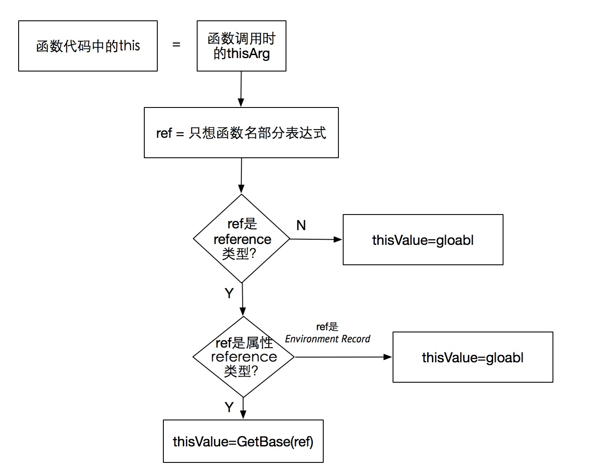

前言
this是JavaScript中的著名月经题，每隔一段时间就有人翻出了拿各种奇怪的问题出来讨论，每次都会引发一堆口水之争。从搜索引擎搜了一下现在的比较热门的关于this的用法，如：Javascript的this用法 、深入理解JavaScript中的this关键字 、你不知道的this 等文章几乎都是从现象出发，总结this在不同场景下的指向结果，如同江湖郎中一般，都没有从根本上解释现象出现的原因，这就导致每次有了关于this的题层出不穷，因为经验总结只是教会了你现有的场景，而没有教会你如何解释新的场景。
老司机都知道，发展到今天，有规范在，有源码在，早已经不是IE6时代，还需要总结使用经验场景也太不科学了。最近又在网上刷到关于this的讨论，正巧在规范中追寻过this的秘密，在这里分享一下个人经验。
*以下规范均引用ES5
理论篇
规范中之处ECMAScript有三种可执行代码：
- 全局代码（Global code）
- eval代码（Eval code）
- 函数代码（Function code）
其中，对于全局代码直接指向global object，eval代码由于已经不推荐使用暂不做讨论，我们主要关注函数代码中的 this 如何指定。
进入函数代码
The following steps are performed when control enters the execution context for function code contained in function object F, a caller provided thisArg, and a caller provided argumentsList
规范指出，当执行流进入函数代码时，由函数调用者提供 thisArg 和 argumentsList。所以我们需要继续寻找，查看函数调用时候this是如何传递进去的。
函数调用
The production CallExpression : MemberExpression Arguments is evaluated as follows:
- Let ref be the result of evaluating MemberExpression.
…- If Type(ref) is Reference, then
a. If IsPropertyReference(ref) is true, then
i. Let thisValue be GetBase(ref).
b. Else, the base of ref is an Environment Record
i. Let thisValue be the result of calling the ImplicitThisValue concrete method of GetBase(ref).- Else, Type(ref) is not Reference.
a. Let thisValue be undefined.
从上述规范中，在函数调用发生时，首先会对函数名部分进行计算并赋值给 ref ，6、7中几个if else就决定了一个函数调用发生时，this会指向何方。

在套用if else之前，我们还需要稍微了解一下 Type(ref) is Reference 中的 Reference是个什么东东。
Reference type
Reference type按字面翻译就是引用类型，但是它并不是我们常说的JavaScript中的引用类型，它是一个规范类型（实际并不存在），也就是说是为了解释规范某些行为而存在的，比如delete、typeof、赋值语句等。规范类型设计用于解析命名绑定的，它由三部分组成：
- base value，指向引用的原值
- referenced name，引用的名称
- strict reference flag，标示是否严格模式
用大白话讲，就是规范中定义了一种类型叫做Reference用来引用其他变量，它有一个规定的数据结构。由于是规范类型，所以什么情况下会返回Reference规范上也会写得一清二楚。
至此，我们就可以直接开始实战了 ^ ^
实战篇
我们通过上述理论来解释下面代码中的this：
- foo();
- foo.bar();
- (f = foo.bar)();
如何解释foo();
- 1 执行函数调用规范中的第一步：
Let ref be the result of evaluating MemberExpression.
MemberExpression就是括号左边的部分，此处很简单就是 foo。foo我们知道就是一个标示符，那么执行foo的时候会发生什么呢？答案都在规范中：
11.1.2 Identifier Reference
An Identifier is evaluated by performing Identifier Resolution as specified in 10.3.1. The result of evaluating anIdentifier is always a value of type Reference.
标示符被执行的时候会进行标示符解析(Identifier Resolution)，看10.3.1。（连章节都标好了好伐，只需要点过去就行了。）
1.Let env be the running execution context’s LexicalEnvironment.
…
3.Return the result of calling GetIdentifierReference function passing env, Identifier, and strict as arguments.
看这个返回，返回了 GetIdentifierReference 方法的结果，所以我们还需要再走一步(要有耐心 - -)
Return a value of type Reference whose base value is envRec, whose referenced name is name, and whose strict mode flag is strict.
我们看此处返回了一个Reference ， base value 是 envRec 也就是 10.3.1中传入的 execution context’s LexicalEnvironment
（词法环境为环境记录项Environment Record的组成，它是规范用来管理当前作用域下面变量的类型，此处不用理解，知道它返回了这个东东就行了）
其抽象数据结构大概为：
1 | foo_reference = { |
至此，第一步执行完毕，ref = foo_reference。
- 2 因为是reference, 执行6:
Type(ref) is Reference
- 3 因为是Environment Record,执行 6.b:
Else, the base of ref is an Environment Record
Let thisValue be the result of calling the ImplicitThisValue concrete method of GetBase(ref).
- 4 ImplicitThisValue
最后，thisValue等于执行ImplicitThisValue的结果，还是查看规范：
10.2.1.1.6 ImplicitThisValue()
Declarative Environment Records always return undefined as their ImplicitThisValue.
到此我们知道，foo()执行时, thisValue = undefined; , 对应到 JavaScript 代码中的 this，还差最后一步：
Else if thisArg is null or undefined, set the ThisBinding to the global object.
真相大白：foo()执行时，this = global = window
如何解释 foo.bar()
- 1 执行函数调用规范中的第一步：
Let ref be the result of evaluating MemberExpression.
foo.bar我们都知道是一个属性访问，那么执行属性访问的时候会发生什么呢？答案都在规范中：
11.2.1 Property Accessors
The production MemberExpression : MemberExpression [ Expression ] is evaluated as follows:
1.Let baseReference be the result of evaluating MemberExpression.
2.Let baseValue be GetValue(baseReference)
8.Return a value of type Reference whose base value is baseValue and whose referenced name ispropertyNameString, and whose strict mode flag is strict
- baseReference 等于执行 MemberExpression 在此处为 []左边的语句即 foo 的结果，上一节已经说过了返回一个 reference.
- baseValue 等于 GetValue(baseReference) 。
8.7.1 GetValue
（ GetValue属于一个规范中比较重要的方法，此处为节约篇幅，暂时不讲，以后可以单开文章讲解。暂时记住他的结果一般为：如果是reference传入，会返回一个普通类型出来。比如 foo 为reference，通过GetValue之后就是一个普通的 object，也就是 foo 对应的 js 类型本身。）
1 | reference_foo_bar = { |
- 2 因为是reference, 执行6:
Type(ref) is Reference
- 3 因为是属性引用类型,执行 6.a:
If IsPropertyReference(ref) is true, then
i.Let thisValue be GetBase(ref).
GetBase(ref) = reference_foo_bar.base = foo;
真相大白， foo.bar() 执行时 this 指向 foo
如何解释 (f = foo.bar)()
这个语句属于罕见写法，在各种经验总结中属于高级技巧，但是通过规范，一样分分钟搞定。
- 1 执行函数调用规范中的第一步：
Let ref be the result of evaluating MemberExpression.
f = foo.bar 是一个明显的赋值语句，我们查看规范，赋值语句会发生什么：
[11.13.1 Simple Assignment ( = )] (http://es5.github.io/#x11.13.1)
The production AssignmentExpression : LeftHandSideExpression = AssignmentExpression is evaluated as follows:
- Let rref be the result of evaluating AssignmentExpression.
- Let rval be GetValue(rref)
- Return rval.
可以看出简单赋值语句返回的是对等于号右边进行GetValue之后的结果，上一节讲了，执行过GetValue就会返回js的类型，此处会返回 foo.bar 也就是一个 [Object Function] 类型。
- 2 ref不是reference，执行7
7.Else, Type(ref) is not Reference.
a. Let thisValue be undefined.
- 3 thisValue = undefined
同理：Else if thisArg is null or undefined, set the ThisBinding to the global object.
真相大白， (f = foo.bar)() 执行时 this = global = window
老司机的经验
虽然我们不是江湖郎中，但是每次查询规范也有点麻烦，此处还是有一定规律可循的。
我们观察上述过程，其实最关键的就是判断返回值是不是 reference ，如果不是，直接可以推出等于window，如果是，只需要看是不是属性 reference。这里有外国友人统计过一张速查表：
| Example | Reference? | Notes |
|---|---|---|
| “foo” | No | |
| 123 | No | |
| /x/ | No | |
| ({}) | No | |
| (function(){}) | No | |
| foo | Yes | Could be unresolved reference if foo is not defined |
| foo.bar | Yes | Property reference |
| (123).toString | Yes | Property reference |
| (function(){}).toString | Yes | Property reference |
| (1,foo.bar) | No | Already evaluated, BUT see grouping operator exception |
| (f = foo.bar) | No | Already evaluated, BUT see grouping operator exception |
| (foo) | Yes | Grouping operator does not evaluate reference |
| (foo.bar) | Yes | Ditto with property reference |
结语
只想说一句：答案都在规范中，答案都在规范中，答案都在规范中 。与其读微博上某些不靠谱大V的总结，不如去撸一遍规范。